CS180 · Intro to Computer Vision & Computational Photography · Fall 2026
Image Warping & Mosaicing
Two photos taken from the same spot are related by a homography. Click matching points, solve for it by least squares, warp one photo into the other's frame by sampling backwards, and blend the two into one wider view.
This page is interactive: two before/after sliders and a zoom viewer on every image. The live version is at https://andrewboldi.github.io/cs180/proj4a/
Part A.1 · Shoot the pictures
Turn, don't walk
Two photos are related by a homography exactly when the camera rotates about its center of projection without moving, or when everything in view lies on one plane. Any translation between the shots adds parallax, which no single 3 × 3 matrix can undo, so each set should be two heavily overlapping views taken from one spot. All photos are from the iPhone SE (3rd generation) main camera: 3.99 mm at f/1.8 (28 mm equivalent), 3024 × 4032 pixels once the EXIF rotation is applied.
Set 1 · in0, in1
Indoors
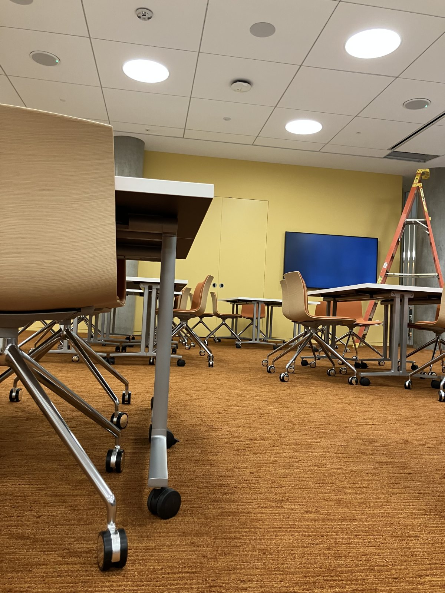
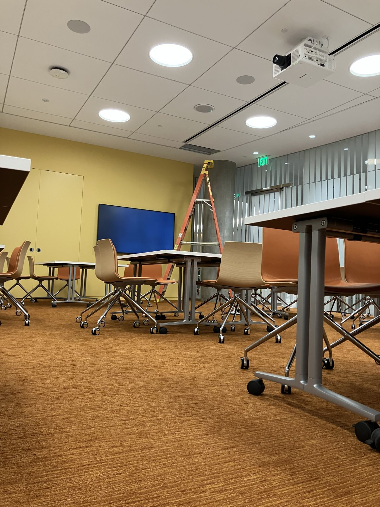
Set 2 · out0, out1
Outdoors, at dusk
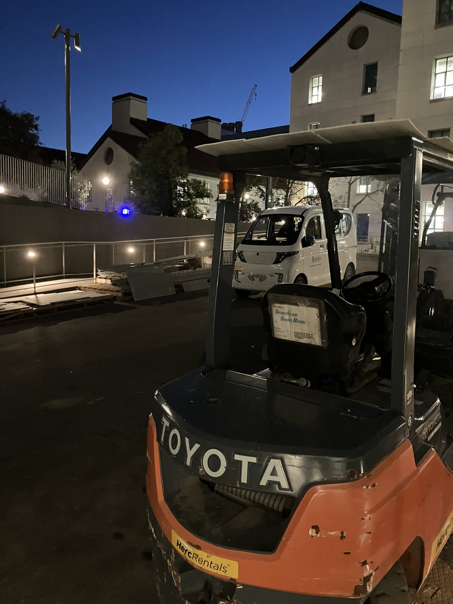
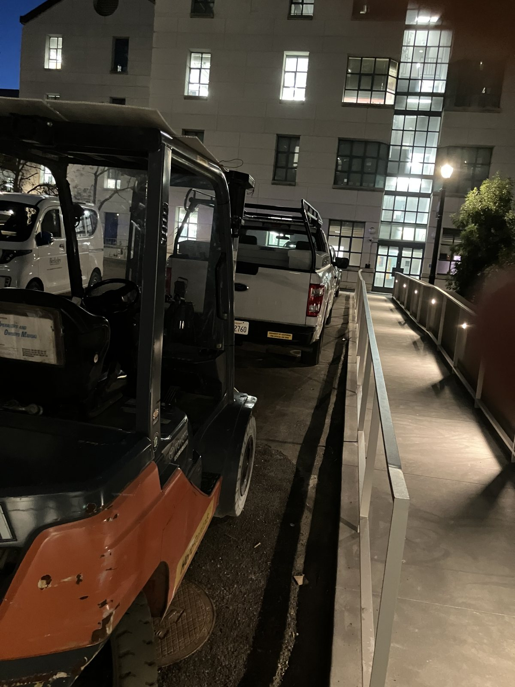
What makes set 2 harder
The forklift is only a few feet from the lens, so any sideways movement of the phone between the two shots shows up as parallax between it and the buildings behind. The exposure also changed between the frames (1/15 s at ISO 1250, then 1/17 s at ISO 640), so the two photos don't have the same brightness where they overlap. I didn't get a third set shot in time, so this submission has two mosaics instead of three.
Part A.2 · Recover homographies
Twenty-four equations, eight unknowns
A homography sends a point (x, y) in one image to (x′, y′) in the other through a 3 × 3 matrix acting on homogeneous coordinates. H is only defined up to scale, so we fix its bottom-right entry to 1 and solve for the other eight. Each clicked pair gives two equations that are linear in those eight unknowns. Four pairs pin H down exactly, but a few pixels of clicking error would then swing it a lot, so we click more and solve the overdetermined system by least squares with np.linalg.lstsq.
Projective map
[wx′, wy′, w]ᵀ = H [x, y, 1]ᵀDividing by w = gx + hy + 1 gives x′ = (ax + by + c) / (gx + hy + 1), and the same for y′ with d, e and f. Multiplying through by the denominator leaves equations that are linear in a through h.
Two rows per correspondence
[x y 1 0 0 0 −xx′ −yx′; 0 0 0 x y 1 −xy′ −yy′] h = [x′; y′]Stacking n pairs gives a 2n × 8 system A h = b, and least squares picks the h that minimizes ‖A h − b‖². With the 12 pairs below, A is 24 × 8.
Set 1 · 12 pairs
The correspondences
Clicked with the course's correspondence tool, which exports pairs in order and numbers them from 0. Point i on the left matches point i on the right. The red cross is a thirteenth pair that was dropped (see below).
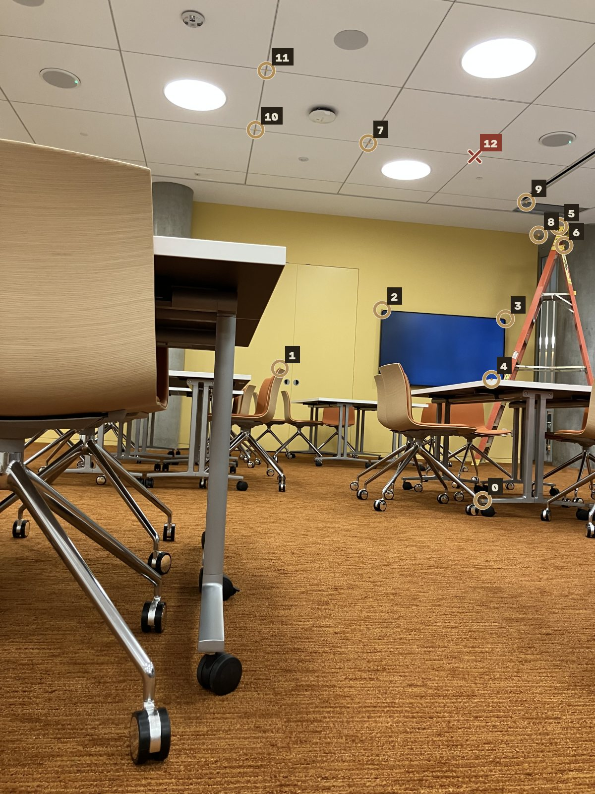
Set 1 · in0 → in1
The system, and the H it gives
A h = b · first two of twelve pairs
A h = b with rows [2453 2539 1 0 0 0 −3127575 −3237225], [0 0 0 2453 2539 1 −6318928 −6540464], [1422 1870 1 0 0 0 −298620 −392700], [0 0 0 1422 1870 1 −2717442 −3573570], … and b = [1275, 2576, 210, 1911, …]Pair 0 is (2453, 2539) ↔ (1275, 2576), and pair 1 is (1422, 1870) ↔ (210, 1911), in pixels of the full-resolution photos.
Recovered homography · in0 → in1
H = [1.392 −0.01654 −1699; 0.2765 1.255 −486.9; 1.318e−4 −4.619e−6 1]Sending the 12 left-image points through H lands them within 0.4 to 3.6 px of their right-image partners (mean 2.1 px).
One bad click
The first overlay ghosted everywhere. Refitting H with one pair left out at a time found the cause: without pair 12, the other twelve agree to within 3.6 px, but with it every residual was between 72 and 274 px. Pair 12 is on the ceiling, where the grid of tiles repeats, and its right-image click landed on a different intersection, about 530 px from where the other pairs put it. Least squares has no way to ignore one bad equation, so a single wrong click bent the whole homography. The slider compares the overlay with all 13 pairs (left) and with pair 12 dropped (right).
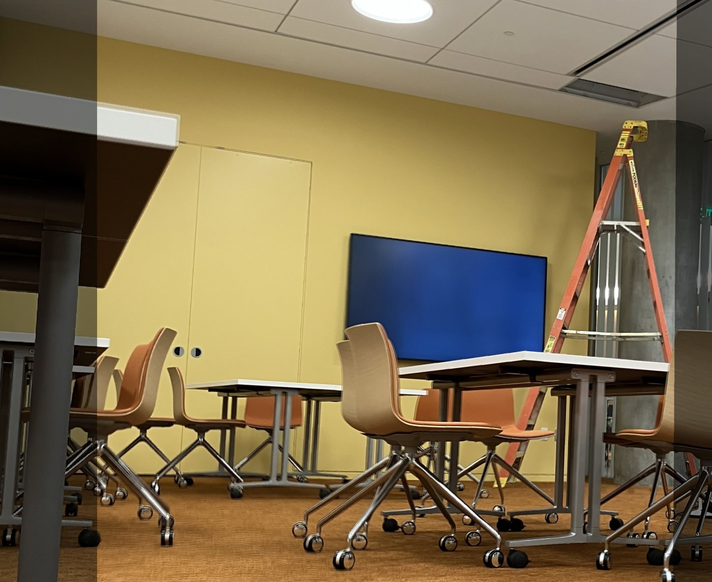
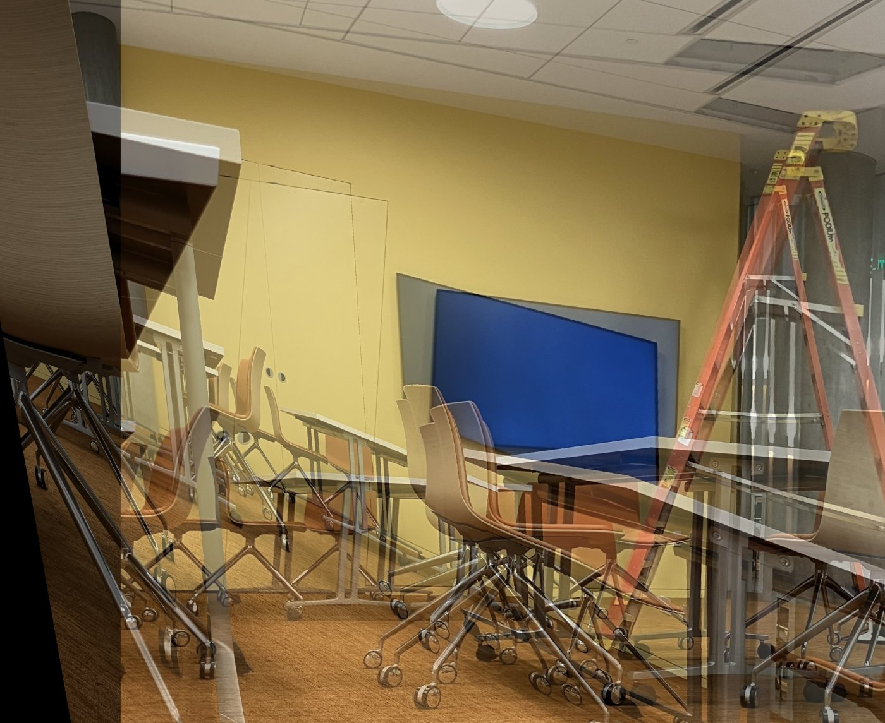
Set 2 · 21 pairs
Correspondences for the outdoor set
These points were not clicked by hand. I matched SIFT features between the two photos with OpenCV, then ran RANSAC several times in a row, removing each model's inliers before the next run, to separate the groups of matches that agree with different homographies. The largest group that covers both the forklift and the windows of the building behind it gave the cleanest overlay, and I kept one inlier from each cell of a coarse grid so the 21 pairs spread across the overlap. H itself is still computed by my own least-squares computeH from those 21 pairs.
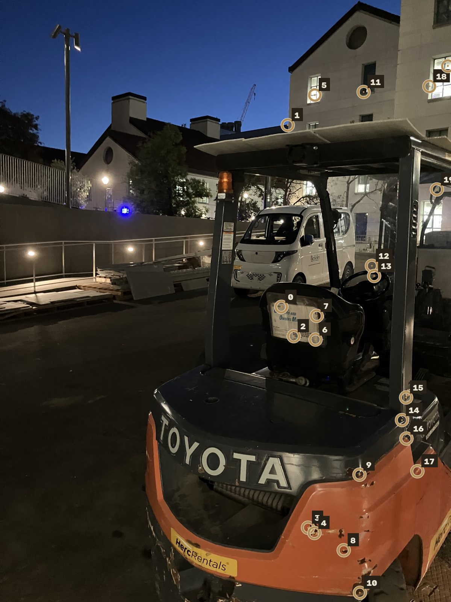
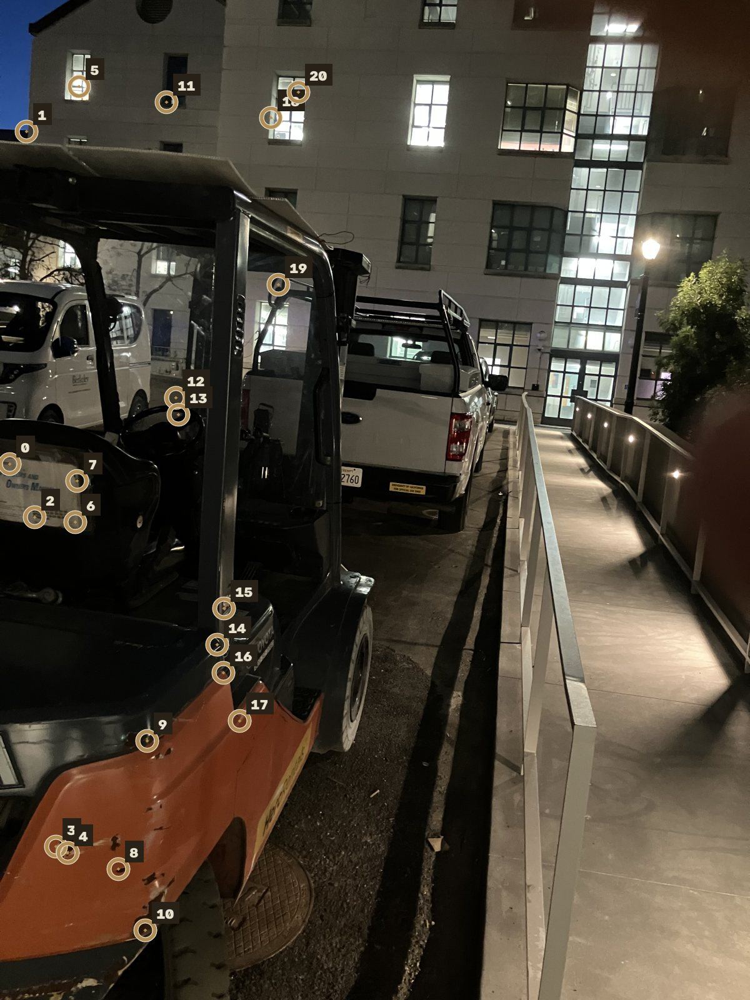
Recovered homography · out0 → out1
H = [1.866 −0.01852 −3420; 0.5107 1.727 −1622; 2.657e−4 2.093e−5 1]The 21 out0 points land within 3.4 px of their out1 partners after going through H (mean 1.7 px). uv run pytest also checks every exported .json by refitting H with one pair left out at a time, so a bad pair like the ceiling click above gets named.
Part A.3 · Warp the images
Sampling backwards
Pushing every source pixel forward through H would leave holes wherever the warp stretches the image. So we warp backwards: send the four corners through H to find the output's bounding box, then for every pixel in that box ask H−1 where it came from, and sample the source there. That location almost never lands exactly on a pixel, and the two interpolation methods differ in what they do about it. Nearest neighbor rounds it to the closest pixel. Bilinear blends the four pixels around it, weighting each by how close it is.
Inverse warping
[w·xₛ, w·yₛ, w]ᵀ = H⁻¹ [x, y, 1]ᵀThe bounding box comes from the four corners sent through H. Integer coordinates are pixel centers, and an output pixel whose source (xs, ys) falls outside the photo stays empty.
Bilinear interpolation
I(xₛ, yₛ) = (1−α)(1−β) I₀₀ + α(1−β) I₁₀ + (1−α)β I₀₁ + αβ I₁₁Here α = xs − ⌊xs⌋ and β = ys − ⌊ys⌋, and Iij is the source pixel at (⌊xs⌋ + i, ⌊ys⌋ + j). Nearest neighbor instead takes the single pixel at (round(xs), round(ys)).
in0 warped into in1's frame
Nearest neighbor vs. bilinear
Both warps use the homography from A.2 on the full 3024 × 4032 photo and produce a 3595 × 5148 output. Timed with time.perf_counter, nearest neighbor takes 1.5 s and bilinear 3.4 s.
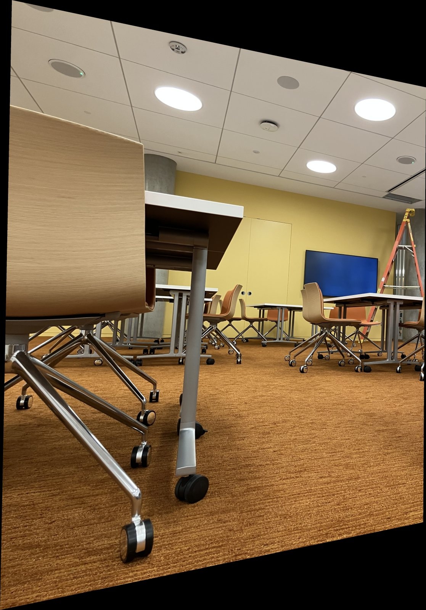
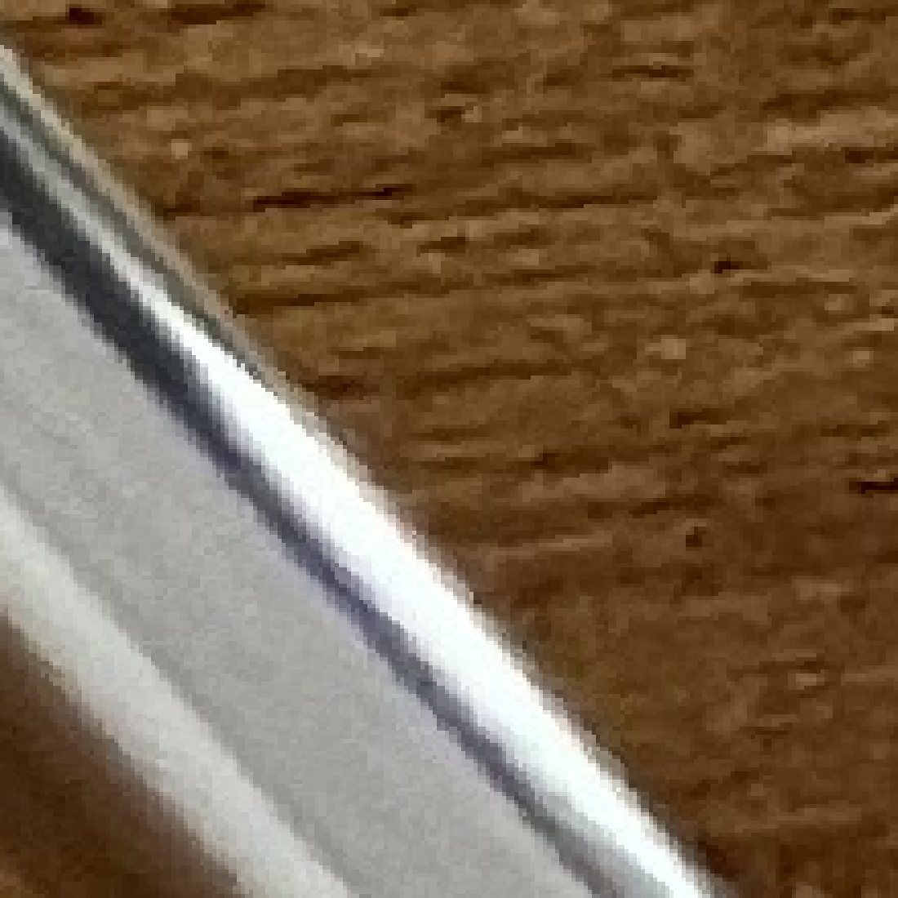
A 220 × 220 px patch of each output around a chrome chair leg at the lower left, where the warp stretches the photo (about 1.7× in area here), enlarged 5× with square pixels.
Speed vs. quality
In the close-up, nearest neighbor turns the edges of the chrome leg into stair steps, because every output pixel copies one whole source pixel and neighboring output pixels often copy the same one. Bilinear gives smooth edges and smooth highlights, at the cost of being a little softer. Bilinear reads four source pixels instead of one and does the weighting arithmetic, and it took about 2.3 times as long (3.4 s vs. 1.5 s). At the size these photos are shown on a page the difference is hard to see. It only shows up when you zoom in where the warp stretches the image, which is why the mosaics below use nearest neighbor.
Testing H on one photo
Rectification
Click the four corners of something known to be rectangular, pair them with the corners of a rectangle of the right proportions, and warp. If the object comes out rectangular, computeH and the warps are working before we rely on them for a mosaic.
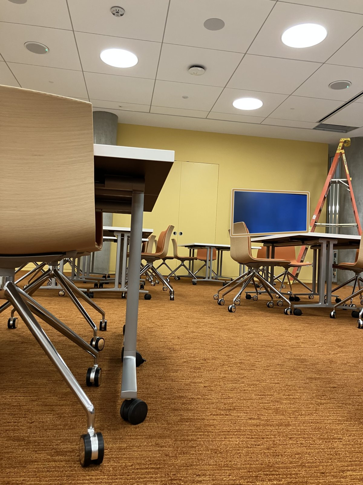
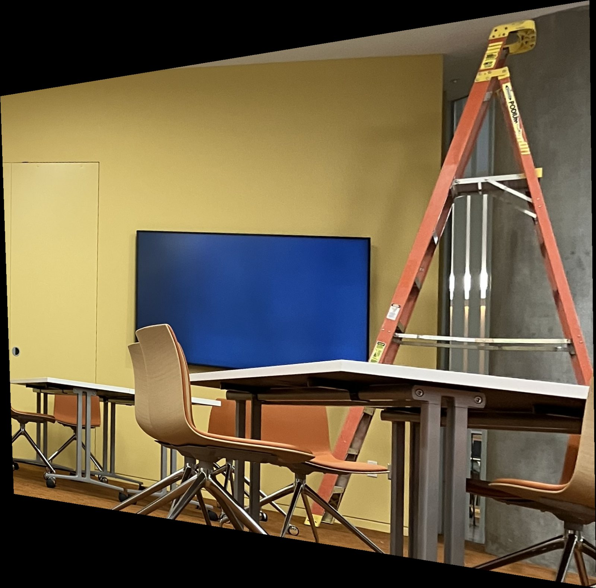
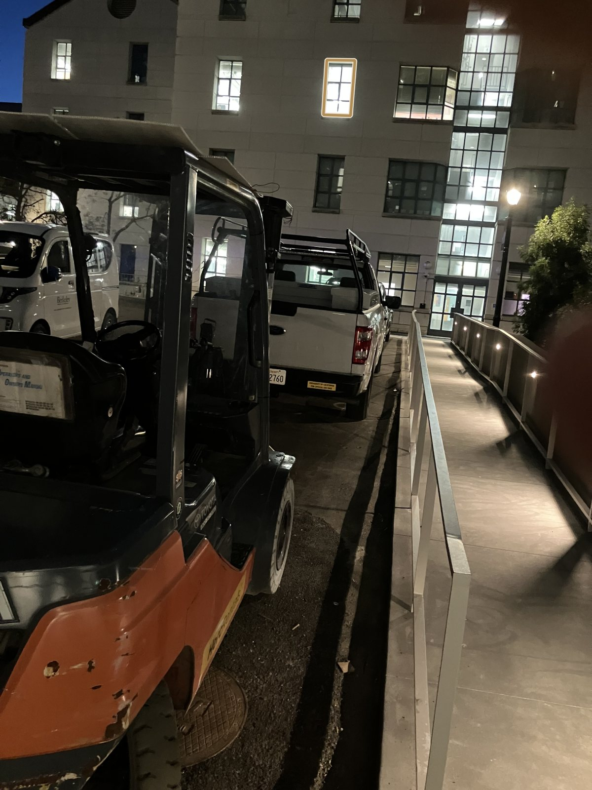
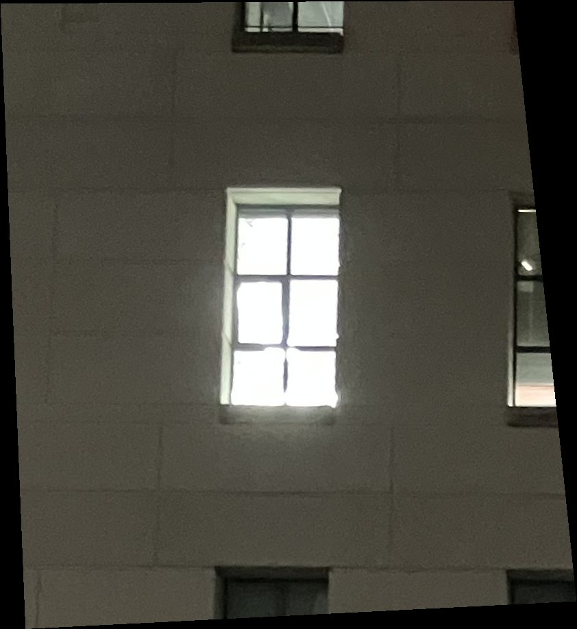
How the rectifications were made
The screen is a 16:9 display, so its corners go to a 16:9 rectangle. Its bottom-left corner is hidden behind a chair, so I extended the screen's left and bottom edges until they met. The window is a 2 × 3 grid of panes, and I mapped it to 150 × 290, close to its measured size in the photo, because I don't know its real proportions. In both cases the rectangle sits where the object already is, at about its current width, so the output stays near the input's scale. Warping the whole photo didn't work: the side of the image far from the object gets sent toward the line at infinity, and the output would have been around 10 000 × 14 000 pixels. So the photo is cropped to the object plus a margin first. Afterwards the screen's edges are horizontal and vertical, and the window's sides, which lean in because the phone was tilted up at the building, come out parallel. Rectangles staying rectangles is also a good check that computeH and the warps work, before trusting them with a mosaic.
Part A.4 · Blend the images into a mosaic
Two views, one plane
in1 stays where it is and in0 is warped into its projection with the homography from A.2. Both go onto one canvas big enough to hold them, shifted by the warped image's top-left corner (xmin, ymin) = (−1799, −487), since in0 lands to the left of and above in1.
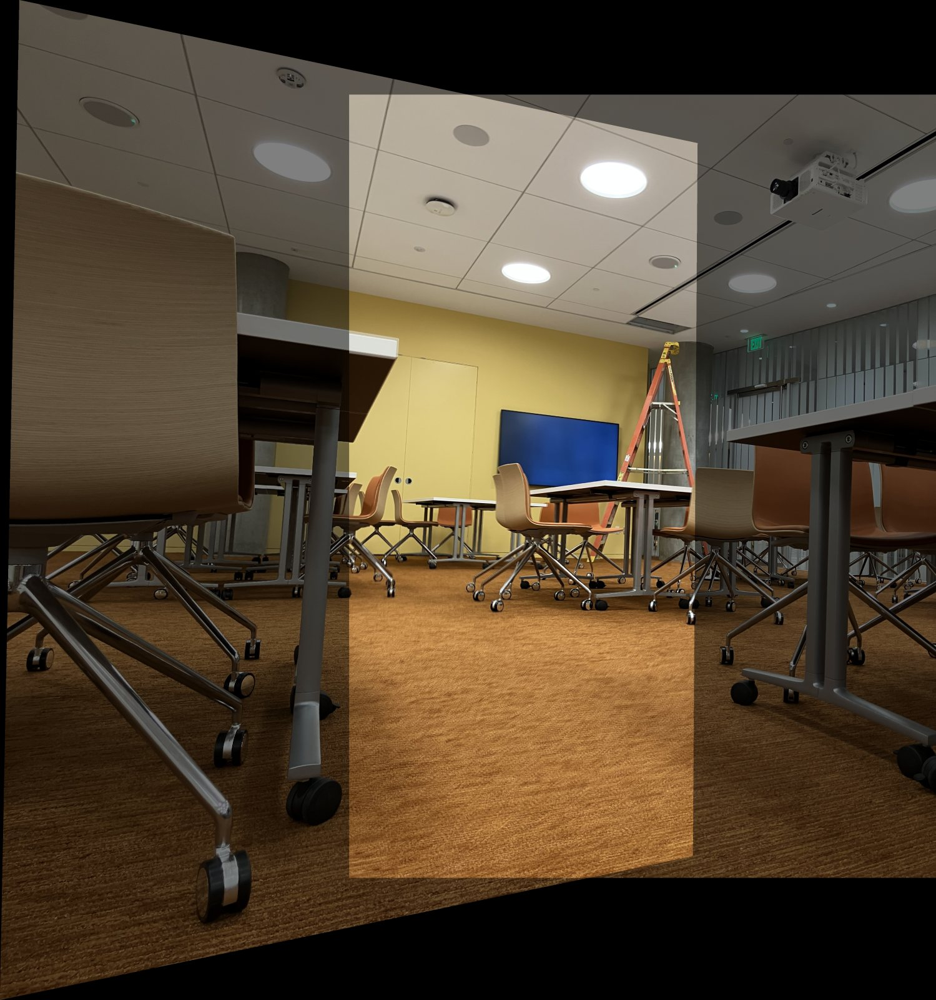
Not a mosaic yet
This is an even 50/50 average of the two layers. It shows that the registration is right, but it isn't a blend: wherever only one photo has pixels it shows at half brightness, and the edges of each photo are hard seams.
Feather weight
w(x, y) = min(x, W−1−x, y, H−1−y) / maxEach source photo gets a weight that is 0 on its border and rises linearly to 1 at its center. It is the distance to the nearest edge, normalized.
Weighted average
I = Σ wᵢ Iᵢ / Σ wᵢThe weight rides along as a fourth channel, so the warp carries it into the mosaic's frame with no extra work. Where only one photo covers a pixel, this returns that photo unchanged.
Blending procedure
Before warping, I multiply each photo's colors by its feather weight and stack the weight on as a fourth channel, [w·B, w·G, w·R, w]. in0 goes through the inverse warp and in1 through the identity. Both are pasted into zero-filled canvases of the same size, and the canvases are added. Dividing the three color channels by the summed weight (plus 10−8, so empty canvas stays black instead of becoming 0/0) gives the weighted average. Since each photo fades out toward its own edges, the overlap crossfades smoothly from one photo to the other instead of switching at a seam. That also hides most of the brightness difference between the two exposures in set 2. My first attempt divided by the summed weight without multiplying the colors by it first, and every pixel came out black or blown out. The slider shows the 50/50 average (left) against the feathered blend (right) on the same window of set 1.
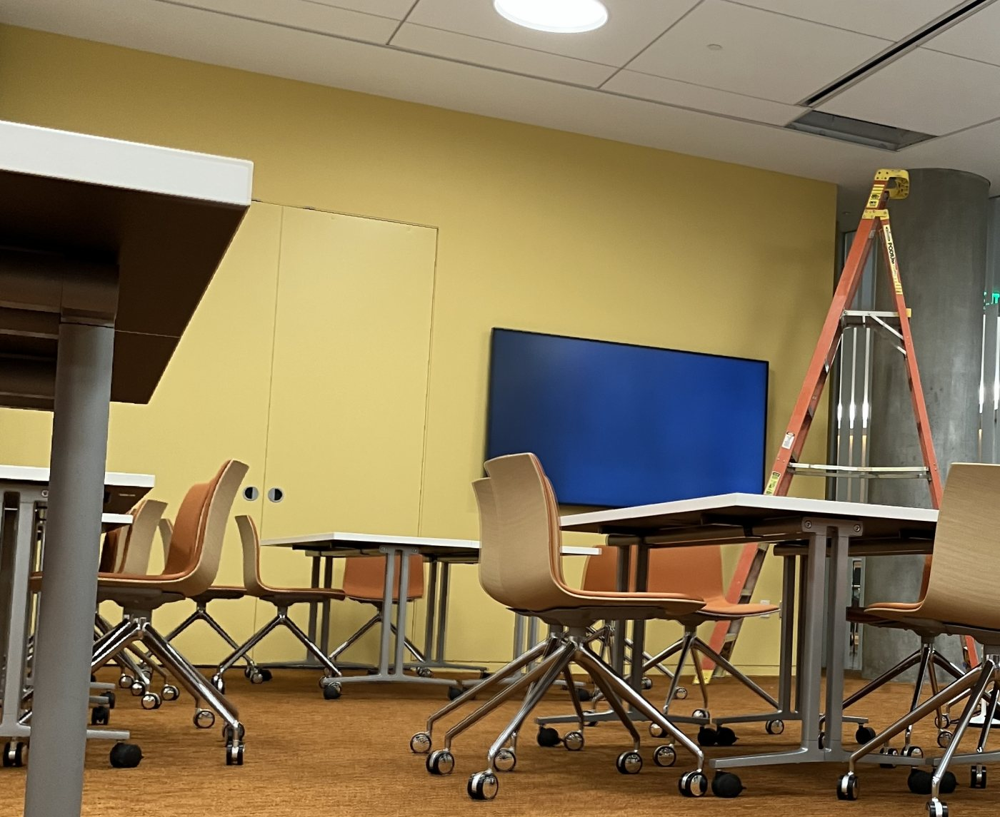

Results
The mosaics
Each mosaic warps the left photo into the right photo's frame. The source photos are shown in A.1.
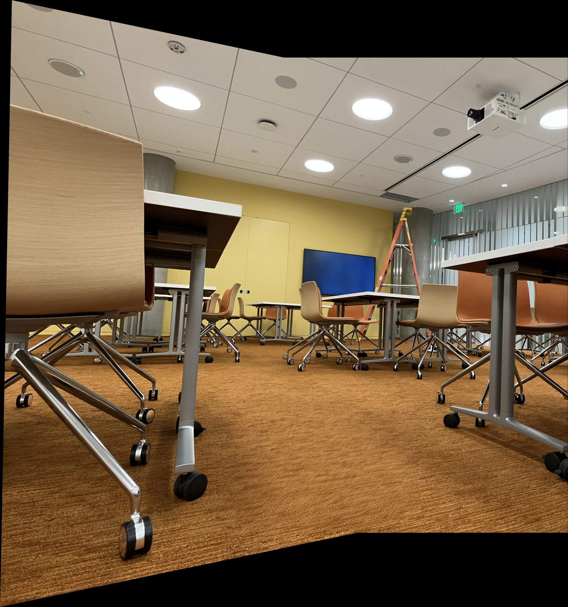
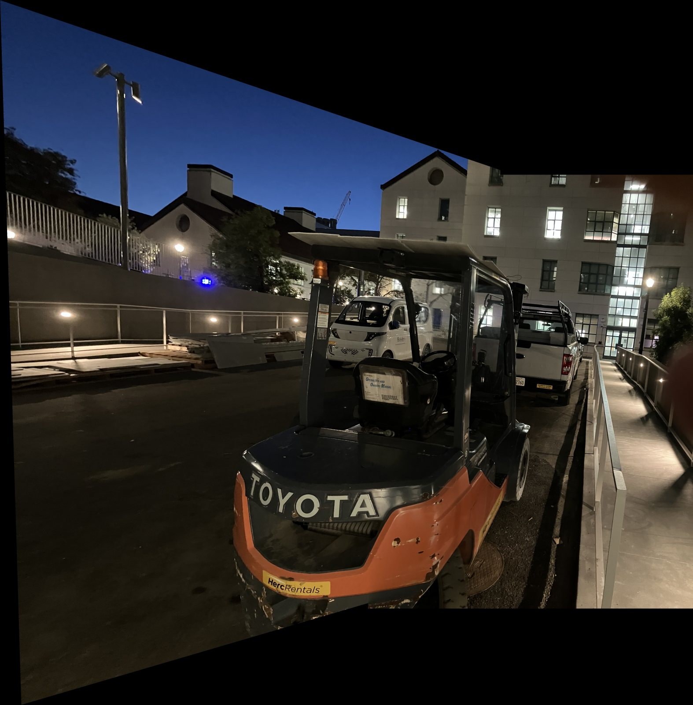
Takeaway
What I learned
Least squares trusts every equation equally. One click on the wrong ceiling-tile corner bent the whole homography, and the fix wasn't more points but finding the bad one, by refitting without each pair in turn. Turning that check into a test meant later correspondence files got checked automatically. Blending was harder than the math made it look. A weighted average is only right if the colors are multiplied by their weights before they're summed. And keeping the weight as a fourth channel that the warp carries along got rid of a lot of offset bookkeeping. The outdoor set also showed how much a homography assumes: anything close to the camera, like the forklift, only lines up if the phone turns without moving.